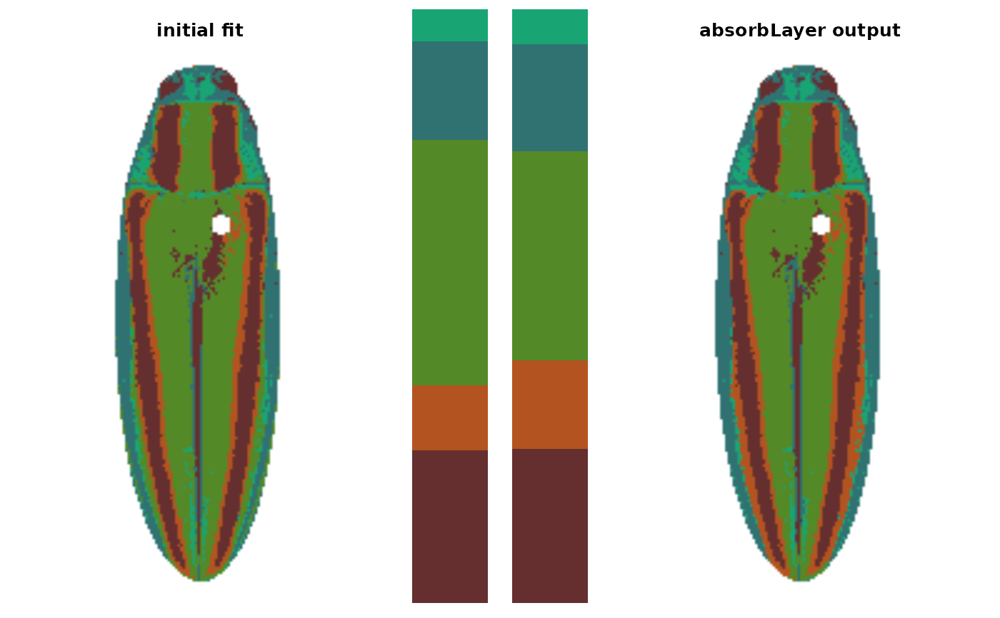
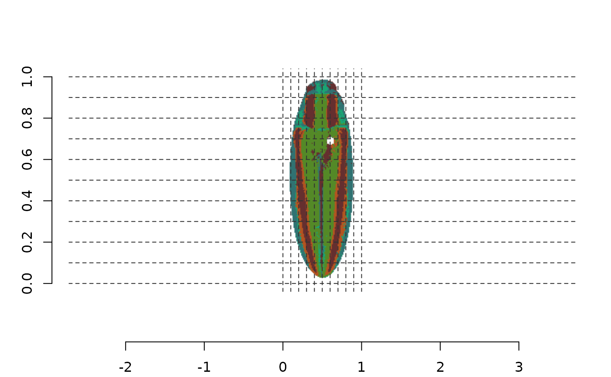
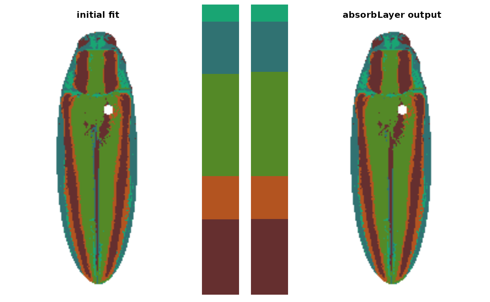

absorbLayer.RdAbsorb a layer into its surrounding color patches
A recolorize object.
The numeric index of the layer to absorb.
A condition for determining which components to absorb,
written as a function. The default (function(l) l <= Inf) will affect
all components, since they all have fewer than infinity pixels.
The rectangular bounding box (as proportions of the image width and length) for selecting patches. Patches with at least partial overlap are counted. Defaults (0-1) include the entire image. See details.
Color for highlighting the affected layer.
Logical. If the layer is completely absorbed, remove it from the layer indices and renumber the existing patches? (Example: if you completely absorb layer 3, then layer 4 -> 3 and 5 -> 4, and so on).
Logical. Plot results?
A recolorize object.
This function works by splitting a layer into spatially distinct
'components' using imager::split_connected. A contiguous region of pixels
is considered a single component. Only components which satisfy
both the size_condition and the location condition (specified via x_range
and y_range) are absorbed, so you can be target specific regions with
(ideally) a minimum of fuss.
The size_condition is passed as a function which must have a logical
vector output (TRUE and FALSE) when applied to a vector of sizes.
Usually this will be some combination of greater and less than statements,
combined with logical operators like & and |. For example,
size_condition = function(x) x > 100 | x < 10 would affect components of
greater than 100 pixels and fewer than 10 pixels, but not those with 10-100
pixels.
The x_range and y_range values set the bounding box of a rectangular
region as proportions of the image axes, with the origin (0, 0) in the bottom
left corner. Any patch which has at least partial overlap with this bounding
box will be considered to satisfy the condition. When selecting this region,
it can be helpful to plot a grid on the image first to narrow down an
approximate region (see examples).
editLayers for editing layers using morphological operations; thresholdRecolor for re-fitting the entire image without minor colors.
# \donttest{
img <- system.file("extdata/fulgidissima.png", package = "recolorize")
# get an initial fit using recolorize + recluster:
fit1 <- recolorize2(img, bins = 3, cutoff = 65, plotting = FALSE)
#>
#> Using 3^3 = 27 total bins
# this looks okay, but the brown patch (3) has some speckling
# in the upper right elytron due to reflection, and the orange
# patch (4) has the same issue
# the brown patch is easier to deal with, since size thresholding alone is
# sufficient; we want to leave the stripes intact, so we'll absorb components
# that are 50-250 pixels OR fewer than 20 pixels (to get the tiny speckles),
# leaving the eyes intact
fit2 <- absorbLayer(fit1, layer_idx = 3,
size_condition = function(x) x <= 250 &
x >= 50 |
x < 20,
highlight_color = "cyan")

# what about the orange speckles? this is more difficult, because
# we want to retain the border around the brown stripes, but those patches
# are quite small, so size thresholding won't work
# but we just want to target pixels in that one region, so we can first
# determine a bounding box for it by plotting a grid:
plotImageArray(constructImage(fit2$pixel_assignments,
fit2$centers))
axis(1, line = 3); axis(2, line = 1)
abline(v = seq(0, 1, by = 0.1),
h = seq(0, 1, by = 0.1),
col = grey(0.2),
lty = 2)

# x-axis range: 0.5-0.7
# y-axis range: 0.55-0.75
# let's try it:
fit3 <- absorbLayer(fit2, layer_idx = 4,
size_condition = function(x) x < 100,
x_range = c(0.5, 0.7),
y_range = c(0.55, 0.75),
highlight_color = "yellow")

# looks pretty good
# }